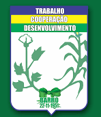
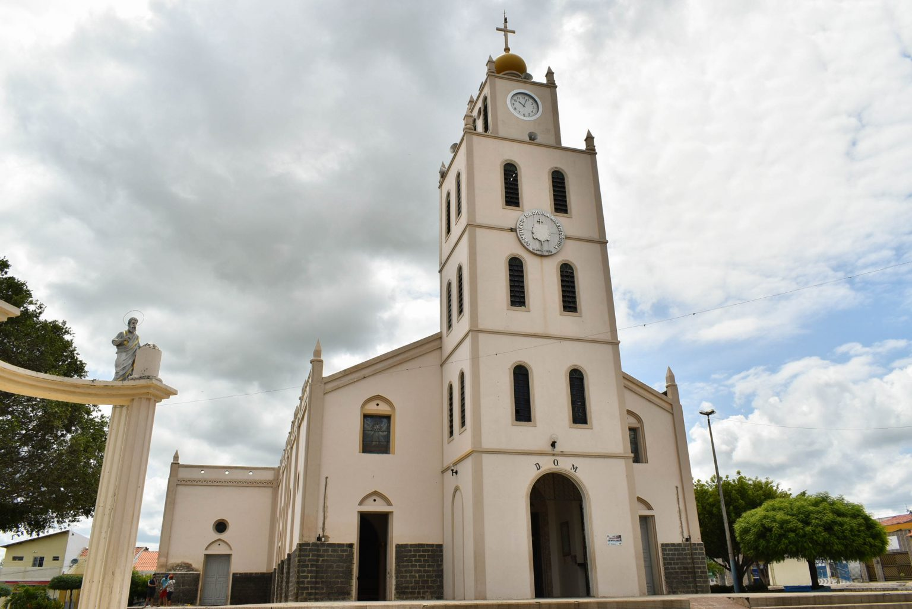

Informações técnicas sobre relevo, população, IDH etc.
| INFORMAÇÕES | |
|---|---|
| Municípios limítrofes | Norte: Aurora; Sul: Mauriti; Leste: Estado da Paraíba; Oeste: Milagres |
| Fundação | 22 de novembro de 1951 (69 anos) |
| Área total | 709,655 km² |
| Clima | Semiárido (As)[3] |
| IDH | 0,658 — médio |
| PIB | R$ 73 380,915 mil |
| INFORMAÇÕES TERRITORIAIS | |
|---|---|
| Número de habitantes | 22 680 habitantes |
| Superfície de Barro |
71 188 hectares
711,88 km² (274,86 sq mi) |
| Densidade populacional | 31,9 ha./km² |
| Altitude de Barro | 260 metros de altitude |
| Coordenadas geográficas decimais |
Latitude:
-6.71667
Longitude: -38.8667 |
| Coordenadas geográficas sexagesimais | Latitude: 6° 43' 0'' Sul , Longitude: 38° 52' 0'' Oeste |
| INFORMAÇÕES DO MUNICÍPIO | |
|---|---|
| Endereço da Prefeitura Municipal de Barro |
Fortaleza
Prefeitura de Barro
Rua Firmino Tavares de Araújo, s/n BARRO - CE, 63380-000 Brasil Work +55 88 3554-1014 Fax +55 88 3554-1015 |
| Telefone da prefeitura |
(88) 3554-1014
Internacional: +55 88 3554-1014 |
| Fax |
(85) 3255-8317
Internacional: +55 85 3554-1015 |
| Endereço electrónicoda prefeitura |
A carregar...
|
| Site oficial do município | barro.ce.gov.br |
| INFORMAÇÕES DO ADMINISTRATIVAS | ||
|---|---|---|
| Prefeito de Fortaleza | JOSÉ MARQUINÉLIO TAVARES | |
| Partido politico | PSD | |
| INFORMAÇÕES DE TRANSPORTE | |
|---|---|
| Transporte urbano disponível | - |
| Aeroporto |
Aeroporto Regional do Cariri
71.5 km
Aeroporto Dix-Sept Rosado
236.9 km
Aeroporto Picos
369.3 km
|
| INFORMAÇÕES DE DISTÂNCIA A OUTRAS CIDADES | ||
|---|---|---|
| São Paulo : 2050 km | Rio de Janeiro : 1861 km | Brasília : 1412 km |
| Salvador : 697 km | Belo Horizonte : 1558 km | Manaus : 2380 km |
| Curitiba : 2359 km | Fortaleza : 336 km mais perto | Goiânia : 1584 km |
| Belém : 1219 km | Porto Alegre : 2900 km | Guarulhos : 2028 km |
| Campinas : 2005 km | São Luís : 762 km | Recife : 464 km |
| Distância calculada em linha reta! | ||
Conheça mais sobre a história de Barro.
As terras localizada entre às margens do riacho do Cumbe e o rio das Cuncas, eram habitadas pelos índios Kariri, antes da chegada das entradas no interior brasileiro durante o século XVII. Os integrantes das entradas, militares e religiosos, mantiveram os primeiros contatos com os nativos, estudaram todas as regiões do Cariri, catequizaram os indígenas e os ajuntaram em aldeamentos ou missões.
Os resultados destes contatos e descobrimentos desencadearam notícias que na região tinha ouro em abundância e em seguida desencadeou-se uma verdadeira corrida para os sertões brasileiros, onde famílias oriundas de Portugal, sonhando com as riquezas de terras inexploradas e com a esperança de encontrar o minério, que as levariam a aumentar o seu patrimônio material, além de aumentar o seu prestigio pessoal com a corte portuguesa.
A busca do metal precioso, nas ribanceiras do Rio Salgado, trouxe para a região do Sertão do Cariri, a colonização e com consequência a doação de sesmarias, o que permitiu o surgimento de lugarejos e vilas. Deste contexto surge Barro, um núcleo urbano que cresce ao redor da fazenda Barro, que na época do cangaço desempenha um papel importante.
Brasão:

Saiba mais sobre os melhores lugares e o que fazer em Barro.
Paróquia Santo Antonio | Santuário Diocesano da Divina Misericórdia
Endereço: Rua Justino Alves Feitosa, 162
Centro BARRO - CE,63.380-000 
Veja como chegar nos melhores pontos de Barro
SAIBA COMO CHEGAR NA CIDADE DE BARRO